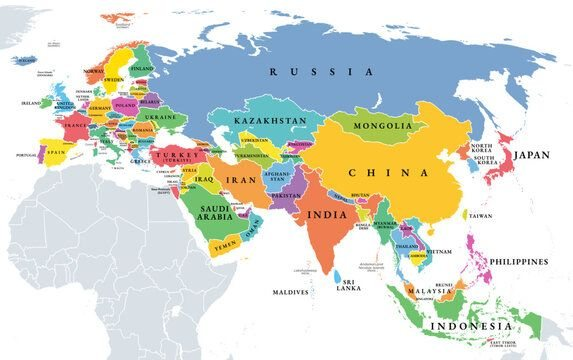
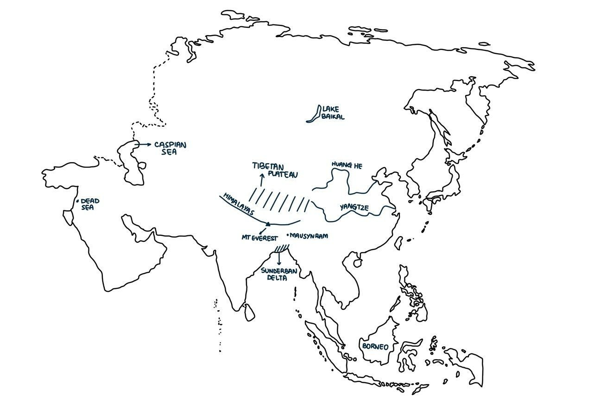
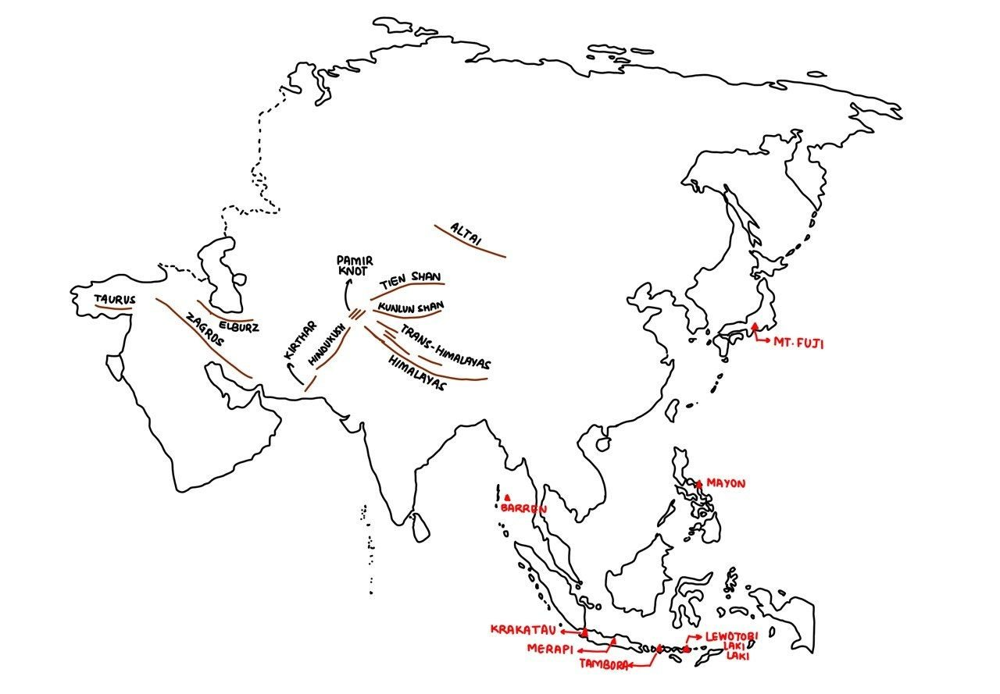
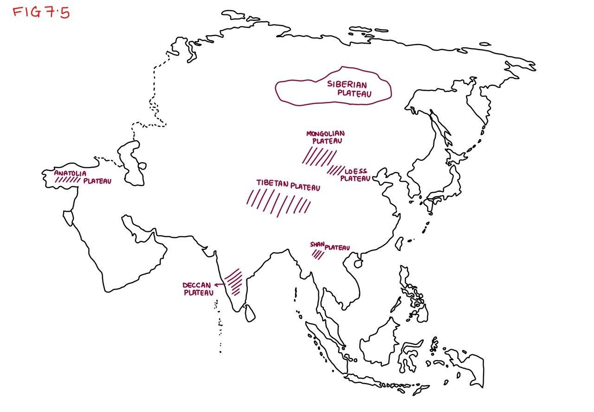
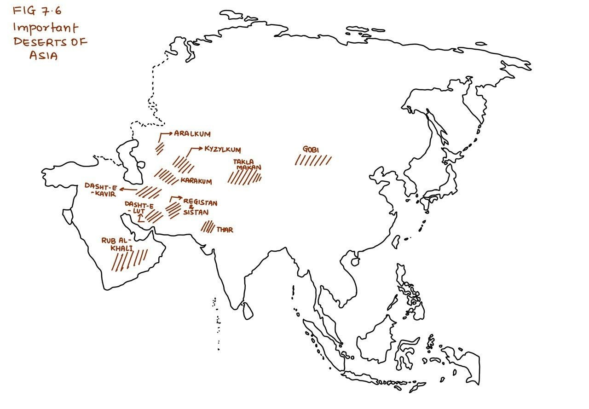
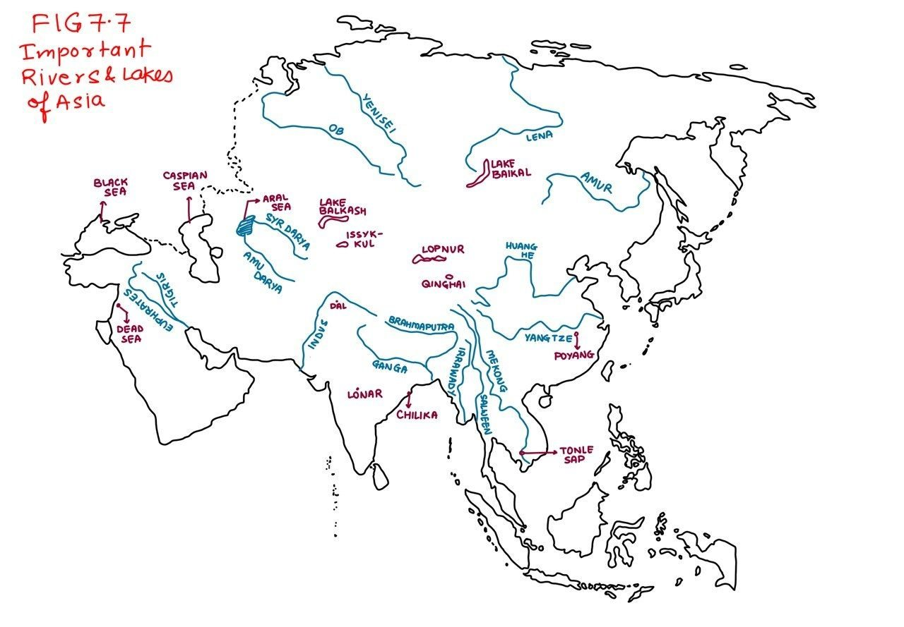
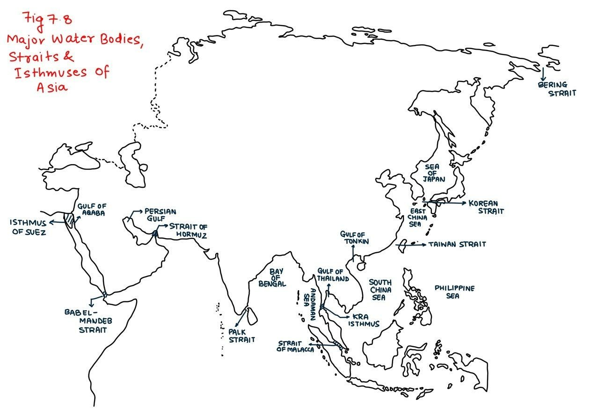
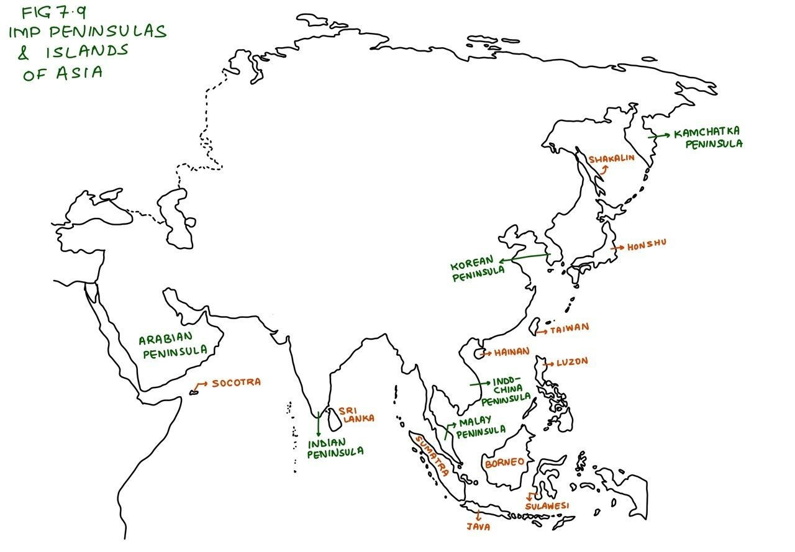

World Mapping · GS Foundation Geography · Chapter 2
AsiaHigh priority
Class slidesSlides 11–428 teacher’s maps14 handout PYQs
Regions, facts, ranges, rivers, seas, straits, islands. Every slide row and every map of the class, in order, with the teacher’s mnemonics, traps, drills, a quiz and flashcards.
Exam lens#
Priority: High (14 handout PYQs map here; the handout quotes Prelims questions only, so Mains years: none quoted in the material).
Prelims PYQs quoted in the handout
| Year | What was asked | Answer | Where |
|---|---|---|---|
| 2011 | Between India and East Asia, the navigation-time and distance can be greatly reduced by which of the foll… | B | Handout Q1 |
| 2014 | Turkey is located between This is map based question, please refer map | B | Handout Q3 |
| 2014 | What is the correct sequence of occurrences of the following cities in South-East Asia as one proceeds fr… | C | Handout Q4 |
| 2015 | The area known as ‘Golan Heights’ sometimes appears in the news in the context of the events related to T… | B | Handout Q5 |
| 2015 | Which one of the following countries of South-West Asia does not open out to the Mediterranean Sea? Jorda… | B | Handout Q6 |
| 2017 | The Mediterranean Sea is a border of which of the following countries? 1. Jordan 2. Iraq 3. Lebanon 4. Sy… | C | Handout Q7 |
| 2017 | Which of the following is geographically closest to Great Nicobar? The distance between the Great Nicobar… | A | Handout Q8 |
| 2019 | Pairs/list: Sea Bordering country 1. Adriatic Sea : Albania 2. Black Sea : Croatia 3. Caspian Sea : Kazak… | B | Handout Q9 |
| 2020 | Pairs/list: River - Flows into 1. Mekong- Andaman Sea 2. Thames - Irish Sea 3. Volga - Caspian Sea 4. Zam… | C | Handout Q10 |
| 2022 | The term "Levant" often heard in the news roughly corresponds to which of the following regions? | A | Handout Q11 |
| n/a | Pairs/list: 1. Azerbaijan 2. Kyrgyzstan 3. Tajikistan 4. Turkmenistan 5. Uzbekistan Which of the above ha… | C | Handout Q12 |
| 2024 | Pairs/list: 1. The Red Sea receives very little precipitation in any form. 2. No water enters the Red Sea… | C | Handout Q17 |
| 2025 | Pairs/list: I. Lake Tanganyika II. Lake Tonlé Sap III. Patos Lagoon Through how many of them does the equ… | D | Handout Q21 |
| 2026 | Ships from which of the following countries have to cross the Strait of Hormuz to reach out to the Indian… | B | Handout Q24 |
Prelims hooks
- Location pairs dominate: Turkey between Black Sea and Mediterranean (2014), Golan Heights (2015), Levant (2022), Strait of Hormuz and who must cross it (2026).
- Border and coast questions: which West Asian country has no Mediterranean coast (Jordan, 2015), which countries touch Afghanistan, the Kra isthmus versus Malacca (2011).
- Sequence and distance questions: south-to-north order of South-East Asian cities (2014), nearest island to Great Nicobar (2017), rivers and the sea they enter (2020).
Map drill: the teacher’s annotated maps are the exam tool here. Every map slide of this chapter sits beside its tables.
In simple words#
- Asia is the biggest continent; most questions ask where a feature lies, which countries border a sea or river, or which strait links which waters.
1 · Regions of Asia and the continent at a glance#
Class slides 11–15


The different regions of Asia include:
- West Asia (South-West Asia): Turkey, Iran, Iraq, Syria, Lebanon, Israel, Jordan, Afghanistan, and Arabian Peninsula & Gulf states (Saudi Arabia, Yemen, Oman, UAE, Qatar, Bahrain, Kuwait). (Palestine is often shown separately.)
- South Asia: Bangladesh, Bhutan, India, Maldives, Nepal, Pakistan, Sri Lanka.
- South-East Asia: Brunei, Cambodia, Indonesia, Laos, Malaysia, Myanmar, Philippines, Singapore, Thailand, Vietnam, Timor-Leste.
- East Asia: China, Mongolia, North Korea, South Korea, Japan (Taiwan considers itself independent but is not recognised by the UN and almost 75% of the countries).
- Central Asia: Kazakhstan, Kyrgyzstan, Tajikistan, Turkmenistan, Uzbekistan.
- North Asia: Asiatic Russia (Siberia).
| S.No. | Particulars | Facts |
|---|---|---|
| 1. | Continent Size | 44.61 million sq. km |
| 2. | Highest Point | Mt. Everest – 8848 m (Fig. 7.4) |
| 3. | Lowest Point | 430-440m – Dead Sea, Israel |
| 4. | Longest Range | Himalayas (2,400 km) |
| 5. | Largest Island | Borneo (743,330 sq. km) (as New Guinea is split between Asia and Oceania) |
| 6. | Largest Lake | Caspian Sea (371,000 sq. km) |
| 7. | Deepest Lake | Lake Baikal: 1620 m (31,499 sq. km) |
| 8. | Longest River | Chang Jiang (Yangtze Kiang) (6,300 km) |
| 9. | Second Longest River | Yellow (Huang He) (5,464 km) |
| 10. | Wettest Place | Mawsynram – 1,080 cm of rain in a year (Meghalaya, India) |
| 11. | Northernmost Point | Cape Chelyuskin (Russia) |
| 12. | Southernmost Point | Pamana Island (Indonesia) For the mainland Asia, it is Tanjung Piai, Malaysia |
| 13. | Westernmost Point | Cape Baba (Anatolian, Turkey) |
| 14. | Easternmost Point | Big Diomede (Diomede Islands, Russia) For the mainland Asia, it is Cape Dezhnev (Russia) |
| 15. | Largest Delta | The Sundarban delta (in India and Bangladesh) |
| 16. | Highest Plateau | Tibet (the highest plateau in the world, often called the ‘Roof of the World’) |


2 · Mountain ranges and volcanoes#
Class slides 16–20
Important Mountain Ranges
| S.No | Mountain Range | Characteristics | Countries |
|---|---|---|---|
| 1 | Pamir Knot | Point from where major ranges (Hindukush, Kunlun Shan, Tian Shan, Karakoram and Himalayas) radiate outwards; convergence of Eurasian & Indian plates | Tajikistan, Afghanistan, China, Pakistan (PACT) |
| 2 | Himalayas | Young Fold Mountains; high seismicity; the tallest range of the world; includes the world’s highest peak: Mt. Everest (8848 m) | India, Pakistan, Nepal, China (Tibet), Bhutan |
| 3 | Trans- Himalayas | Karakoram, Ladakh, Zaskar, Kailash; Fold mountains created due to the convergence of Eurasian and Indian plates; Contain the 2nd highest peak of the world: Mt. Godwin Austin (K2) | India, China primarily, with small extensions of the Karakoram in Pakistan. |
| S.No | Mountain Range | Characteristics | Countries |
|---|---|---|---|
| 4 | Kunlun Shan | Northern border of the Tibetan Plateau | China |
| 5 | Tien Shan (also called Celestial Mountains) | A combination of fold and fault mountains, created by reactivation of local faults due to convergence of the Indian & Eurasian Plates; it is earthquake-prone. | Kazakhstan, Kyrgyzstan, Uzbekistan, China |
| 6 | Hindukush | Extends from Pamir Knot, acting as a natural boundary between Iranian Plateau and Indian Plate. Its southern extension is called the Sulaiman mountains | Pakistan, Afghanistan, Tajikistan (PAT) |
| 7 | Kirthar | Western edge of the Indian plate; arid rocky terrain | Pakistan |
| 8 | Altai | Origin of Ob & Irtysh rivers | Russia, Mongolia, China, Kazakhstan |
| S.No | Mountain Range | Characteristics | Countries |
|---|---|---|---|
| 9 | Zagros | Western boundary of the Iranian Plateau; created due to Arabian and Eurasian plate convergence; oil & gas rich | Iran, Iraq, Turkey |
| 10 | Elburz/Alborz | Barrier between the Caspian Sea & Iranian Plateau; created due to the collision of the Arabian–Eurasian plates collision | Iran |
| 11 | Taurus | Barrier between the Anatolian Plateau & Mediterranean coast; earthquake-prone | Turkey |


Important Volcanoes
| Name | Country | Type | Status | Significance |
|---|---|---|---|---|
| Mount Fuji | Japan | Stratovolcano | Dormant | Japan’s highest peak; last erupted 1707–08 |
| Mount Mayon | Philippines | Stratovolcano | Active | Perfect cone; frequent eruptions (2023) |
| Mount Merapi | Indonesia | Stratovolcano | Active | One of the most active major eruption 2021 |
| Krakatoa (Krakatau) | Indonesia | Caldera complex | Active | 1883 deadly eruption; formed Anak Krakatau |
| Mount Tambora | Indonesia | Stratovolcano | Active | Responsible for the 1815 'Year Without a Summer' eruption |
| Barren Island | India (Andaman and Nicobar Islands) | Stratovolcano | Active | Only active volcano in India; last erupted in 2025 |
| Mount Lewotobi Laki Laki | Indonesia | Stratovolcano | Active | Twin peaks; frequent eruptions |
3 · Plateaus#
Class slides 21–22
Important Plateaus
| Plateau | Location/Countries | Key Features |
|---|---|---|
| Tibetan Plateau | China, India, Nepal, Bhutan | Largest & highest plateau; 'Roof of the World'; source of Indus, Brahmaputra, Yangtze, Mekong |
| Deccan Plateau | India | Includes Deccan Traps; southern Indian plateau; major volcanic province |
| Mongolian Plateau | China, Mongolia | Between Altai & Greater Khingan; Gobi Desert lies here |
| Anatolia Plateau | Central Turkey | Between the Taurus & Pontic Mountains. Formed due to compression between the Arabian Plate and Eurasian Plate, with westward escape of the Anatolian Plate along major faults |
| Shan Plateau | East Myanmar | Formed by tectonic uplift and erosion. East of the Irrawaddy; Consists of limestone Karst topography. |
| Loess Plateau | China | Wind deposition from the Gobi Desert; thick loess (fine silt) |
| Siberian Plateau | Russia | Ancient craton; Flood basalt region (Siberian Traps); mineral-rich |


4 · Deserts#
Class slides 23–24
Important Deserts
| Desert | Location | Key Features |
|---|---|---|
| Gobi | China, Mongolia | Cold desert; extreme temperature variation |
| Thar | India, Pakistan | Largest desert in India; 85% in India |
| Thal | Pakistan | Semi-arid |
| Karakum | Turkmenistan | Shifting dunes; extreme climate |
| Kyzylkum | Kazakhstan, Uzbekistan, small extension in Turkmenistan | Between the Amu Darya & Syr Darya; natural gas deposits |
| Aralkum | Kazakhstan, Uzbekistan | Formed after Aral Sea drying; one of the youngest deserts of the world |
| Taklamakan | China (Xinjiang) | Hyper arid; Silk Road region; within Tarim Basin, surrounded by Tian Shan & Kunlun Shan Mountains. |
| Registan and Sistan | Registan: Afghanistan (small extension in Pakistan) Sistan: Afghanistan and Iran | Sandy deserts |
| Dasht-e-Kavir | Iran | Great Salt Desert; salt flats & marshes |
| Dasht-e-Lut | Iran | Hottest desert; extreme surface temperatures |
| Rub-al-Khali | Saudi Arabia, UAE, Oman, Yemen (SOYU) | Largest continuous sand desert in the world; Oil rich |


5 · Rivers and lakes#
Class slides 25–32
Important Rivers of Asia
| River | Location | Source | Mouth | Features |
|---|---|---|---|---|
| Yangtze | China | Tibetan Plateau | East China Sea | Longest river in Asia (6,300 km) |
| Yellow (Huang He) | China | Bayan Har Mountains | Bohai Sea | 'China’s Sorrow' due to floods |
| Ganges | India, Bangladesh | Gangotri Glacier | Bay of Bengal | Sacred river; dense population support |
| Brahmap utra | China, India, Bangladesh | Chemayungdung , Angsi, and Kubi Glaciers, Tibet | Bay of Bengal | Along with Ganga and Meghana, makes the world’s largest delta; it contains the world’s largest riverine island (Majuli, Assam, India); known to undertake seasonal flooding |
| Indus | China, India, Pakistan | Tibetan Plateau | Arabian Sea | Key to Pakistan’s agriculture |
| River | Location | Source | Mouth | Features |
|---|---|---|---|---|
| Mekong | China, Myanmar, Laos, Thailand, Cambodia, Vietnam (My Very Low CTC) | Tibetan Plateau | South China Sea | The biggest river of Southeast Asia. Makes a delta in South Vietnam. |
| Amur | Russia, China | Onon-Shilka River, Mongolia | Sea of Okhotsk | Forms Russia–China border |
| Lena | Russia | Baikal Mountains | Laptev Sea | Heavily frozen |
| Irrawaddy | Myanmar | Confluence of N’mai & Mali rivers (Northern Myanmar; foothills of Eastern Himalayas) | Andaman Sea | Main river of Myanmar |
| River | Location | Source | Mouth | Features |
|---|---|---|---|---|
| Salween | China, Myanmar, Thailand | Tibetan Plateau | Andaman Sea | Flows through deep gorges |
| Ob | Russia, Kazakhstan | Altai Mountains (Confluence of Biya and Khatun rivers) | Kara Sea | Major Siberian River |
| Yenisei | Mongolia, Russia | Mongolian Highlands | Kara Sea | Key hydropower river |
| Tigris | Turkey, Syria, Iraq | Eastern Turkey | Shatt al-Arab | Mesopotamian river |
| Euphrates | Turkey, Syria, Iraq | Eastern Turkey | Shatt al-Arab | Important for agriculture |
| River | Location | Source | Mouth | Features |
|---|---|---|---|---|
| Amu Darya | Tajikistan, Afghanistan, Uzbekistan, Turkmenistan | Pamir Mountains | Aral Sea | Historically known as the Oxus River. |
| Syr Darya | Kyrgyzstan, Uzbekistan, Kazakhstan, Tajikistan | Tian Shan Mountains | Aral Sea | Important for the irrigation in its hinterland. |


Important Lakes of India
| Lake | Location | Type | Significance |
|---|---|---|---|
| Caspian Sea | Russia, Kazakhstan, Turkmenistan, Iran, Azerbaijan (TARIK) | Endorheic (Brackish Inland Sea) | Largest enclosed inland body; oil & gas rich. Drying up at alarming rates. |
| Lake Baikal | Russia | Freshwater | Deepest & oldest freshwater lake |
| Aral Sea | Kazakhstan, Uzbekistan | Endorheic lake | Used to be the 4th largest lake in the world. Has shrunk by almost 90%, due to diversion of the Amu Darya & Syr Darya |
| Lake Urmia | Iran | Endorheic Lake | According to NASA images of Sept. 2025, it has completely dried up, due to regular droughts, and diversion of water from the rivers that feed it. |
| Lake | Location | Type | Significance |
|---|---|---|---|
| Lake Balkhash | Kazakhstan | Freshwater/Saltwat er | Divided into freshwater & saline parts, separated by the narrow Uzynaral Strait and the Sarymsek Peninsula. |
| Dead Sea | Israel, Jordan, Palestine | Hypersaline | Lowest land point (-430 m) |
| Tonle Sap | Cambodia | Freshwater | Largest freshwater lake in SE Asia. Reverses flow seasonally with Mekong River during monsoon. |
| Lake Issyk-Kul | Kyrgyzstan | Endorheic | High altitude; unfrozen in winter |
| Lake Qinghai | China | Saltwater | Largest lake in China |
| Dal Lake | India | Freshwater | Famous for houseboats |
| Poyang Lake | China | Seasonal Freshwater | China’s largest freshwater lake. Connected to Yangtze River; shrinks drastically in dry season. |
| Lake | Location | Type | Significance |
|---|---|---|---|
| Lonar Lake | India | Crater Lake (Meteorite) | Highly alkaline & saline |
| Chilika Lake | India | Lagoon | The biggest coastal lagoon lake in Asia, and the second biggest in the world after Lagoa dos Patos (Brazil) |
| Lop Nur | China (Xinjiang) | Endorheic (Playa Lake) | Fed by the Tarim river, but due to water diversion from the river, it now has a dried basin, a nuclear weapon test site for China. |
6 · Water bodies, straits and isthmuses#
Class slides 33–37
Important Water Bodies, Straits and Isthmuses Surrounding Asia
| Name | Location | Surrounding Countries | Important Features |
|---|---|---|---|
| Bay of Bengal | Northeastern Indian Ocean | India, Bangladesh, Myanmar, Sri Lanka, Indonesia (SIIMBa) | Largest bay in the world; vital trade routes |
| South China Sea | Western Pacific Ocean | China, Vietnam, Philippines, Malaysia, Brunei, Taiwan (BMC PVT) | One of the world’s busiest shipping lanes; Highly disputed maritime borders. |
| Persian Gulf | Middle East | Iran, Iraq, Kuwait, Saudi Arabia, Bahrain, Qatar, UAE, Oman (QUIIK SOB) | Major global petroleum chokepoint. |
| Sea of Japan | Western Pacific Ocean | Japan, South Korea, North Korea, Russia (Japan RuNS) | Rich marine resources |
| East China Sea | Western Pacific Ocean | China, Taiwan, Japan, South Korea (JuST China) | Important for trade & fisheries |
| Name | Location | Surrounding Countries | Important Features |
|---|---|---|---|
| Philippine Sea | Western Pacific Ocean | Philippines, Japan, Taiwan, Palau, United States (Guam & Northern Mariana Islands) | Contains the Mariana Trench |
| Andaman Sea | Northeastern Indian Ocean | India, Myanmar, Thailand, Indonesia | Prone to tsunamis (Sunda subduction zone) & cyclones |
| Gulf of Thailand | South China Sea region | Thailand, Cambodia, Vietnam, Malaysia | Rich in fisheries |
| Gulf of Tonkin | Northwestern South China Sea | Vietnam, China | Trade significance. Also important for pearl farming. |
| Gulf of Aqaba | Northern Red Sea | Egypt, Israel, Jordan, Saudi Arabia | Strategic waterway for connecting Israel and Jordon with the Red Sea. |
| Name | Location | Surrounding Countries | Important Features |
|---|---|---|---|
| Strait of Malacca | Between Malay Peninsula & Sumatra | Malaysia, Indonesia, Singapore | One of the busiest maritime routes |
| Bering Strait | Between Eastern Russia & Alaska | Russia, USA (Alaska) | Connects the Pacific & Arctic Oceans. Separates Asia and North America. |
| Korean Strait | Between South Korea & Japan | South Korea, Japan | Connects the East China Sea & Sea of Japan. |
| Taiwan Strait | Between Taiwan & China | China, Taiwan | A geo-politically sensitive region due to China not recognising Taiwan’s independence. |
| Bab-el-Man deb | Between the Arabian Peninsula & Africa | Yemen, Djibouti, Eritrea | Key shipping passage |
| Name | Location | Surrounding Countries | Important Features |
|---|---|---|---|
| Strait of Hormuz | Between Iran and Oman | Iran, Oman | An important global crude oil transport channel. Connects the Persian Gulf with the Arabian Sea. |
| Palk Strait | Between India & Sri Lanka | India & Sri Lanka | Contains Adam's Bridge |
| Isthmus of Kra | Between the Andaman Sea & the Gulf of Thailand | Thailand, Myanmar | Potential canal site |
| Isthmus of Suez | Between the Mediterranean Sea & Red Sea | Egypt | Location of the Suez Canal |


7 · Peninsulas, plains and islands#
Class slides 38–42
Important Peninsulas of Asia
| Peninsula | Location | Surrounding Water Bodies |
|---|---|---|
| Indian Peninsula | South Asia (India) | Arabian Sea (W), Bay of Bengal (E), Indian Ocean (S) |
| Indochina Peninsula | Core: Laos, Cambodia, Vietnam Extended Geographical Region: Myanmar, Thailand, Malaysia (MTV LCM) | Andaman Sea (W), South China Sea (E), Gulf of Thailand (S) |
| Malay Peninsula | Malaysia, Thailand, Southern-most tip of Myanmar Sometimes, Singapore is considered a part | Andaman Sea, South China Sea, Malacca Strait |
| Korean Peninsula | North & South Korea | Yellow Sea, Sea of Japan, Korea Strait |
| Kamchatka Peninsula | Russia (Far East) | Pacific Ocean, Bering Sea, Sea of Okhotsk |
| Arabian Peninsula | Saudi Arabia, UAE, Oman, Yemen, Qatar, Bahrain, Kuwait | Persian Gulf, Red Sea, Arabian Sea |
Important Plains and Grasslands of Asia
| Grassland / Plain | Location | Important Features |
|---|---|---|
| Eurasian Steppe (Eastern & Western) | Mongolia, Kazakhstan, Russia, China | World’s largest continuous temperate grassland; pastoral nomadism |
| Tibetan Plateau Alpine Grasslands | China, India, Nepal, Bhutan | High-altitude cold steppe; yak grazing |
| Indo-Gangetic Plain | India, Pakistan, Bangladesh, Nepal | Fertile alluvial plain; dense population |
| Pamir Alpine Steppe | Tajikistan, Afghanistan, China | High-altitude seasonal grazing; transhumance |
| Western Siberian Plain | Russia, Kazakhstan | Vast lowland plain; wetlands, permafrost; southern agriculture |
Important Islands of Asia
| Island | Location | Country/Countries | Important Features |
|---|---|---|---|
| Borneo | Southeast Asia | Indonesia, Malaysia, Brunei | 3rd largest island in the world; equatorial rainforest |
| Sumatra | Western Indonesia | Indonesia | Along the Sunda Trench, earthquake & volcano prone. Separated from the Great Nicobar island of India by 6-degree channel. |
| Java | Indonesia | Indonesia | Densely populated; fertile volcanic soils |
| Sulawesi (Celebes) | Indonesia | Indonesia | Irregular shape; biodiversity hotspot |
| Luzon | Northern Philippines | Philippines | The largest Philippine Island; Manila, is located here |
| Honshu | Japan | Japan | The largest Japanese island; Tokyo & Mt. Fuji are located here. |
| Taiwan | Off the South-East China coast | Taiwan | Mountainous; tectonically active |
| Island | Location | Country/Countries | Important Features |
|---|---|---|---|
| Sri Lanka | South of India | Sri Lanka | Separated by the Palk Strait; tropical climate |
| Hainan | South China Sea | China | China’s largest island; lies in the tropical zone |
| Sakhalin | North Pacific | Russia | Between the Sea of Okhotsk and the Sea of Japan; Oil & gas reserves; cold climate |
| Socotra | Arabian Sea | Yemen | Unique endemic flora (“Dragon Blood Tree”) |


Teacher’s mnemonics#
The teacher’s own words for each list, kept exactly. Each shows the countries from the slide row.
Traps#
Common mix-ups and the rule for the exam hall
| Trap | What goes wrong, and the rule |
|---|---|
| Mekong and the sea | Mekong enters the South China Sea at the Mekong Delta, not the Andaman Sea (PYQ 2020). |
| Jordan and the sea | Jordan has only a small Red Sea coast in the extreme south-west; it does not open to the Mediterranean (PYQ 2015). |
| Hormuz crossing | Egypt and Syria use the Suez Canal/Red Sea; Bahrain and Qatar must cross Hormuz (PYQ 2026). |
| Kra or Malacca | A new canal across the Kra isthmus cuts time and distance; deepening Malacca is about economic importance, not distance (PYQ 2011). |
| Slide title slip | Slides 30-32 are headed "Important Lakes of India" but the tables are lakes of Asia. Read them as Asia. |
Recall sheet#
Read once, hide it, then rebuild the chapter from memory.
- Asia: Continent Size? → 44.61 million sq. km
- Asia: Highest Point? → Mt. Everest – 8848 m (Fig. 7.4)
- Asia: Lowest Point? → 430-440m – Dead Sea, Israel
- Asia: Longest Range? → Himalayas (2,400 km)
- Asia: Largest Island? → Borneo (743,330 sq. km) (as New Guinea is split between Asia and Oceania)
- Asia: Largest Lake? → Caspian Sea (371,000 sq. km)
- Asia: Deepest Lake? → Lake Baikal: 1620 m (31,499 sq. km)
- Asia: Longest River? → Chang Jiang (Yangtze Kiang) (6,300 km)
- Asia: Second Longest River? → Yellow (Huang He) (5,464 km)
- Asia: Wettest Place? → Mawsynram – 1,080 cm of rain in a year (Meghalaya, India)
- Asia: Northernmost Point? → Cape Chelyuskin (Russia)
- Asia: Southernmost Point? → Pamana Island (Indonesia) For the mainland Asia, it is Tanjung Piai, Malaysia
- Asia: Westernmost Point? → Cape Baba (Anatolian, Turkey)
- Asia: Easternmost Point? → Big Diomede (Diomede Islands, Russia) For the mainland Asia, it is Cape Dezhnev (Russia)
Revise#
Spaced schedule (count from the day you finish the chapter)
| Day | What to do |
|---|---|
| Day 0 | Read the Exam lens and the notes; mark the chapter done |
| Day +1 | Recall sheet: read once, hide, rebuild |
| Day +3 | Flashcards: missed ones only |
| Day +7 | Quick quiz; fix each miss against the Traps |
| Day +21 | Redraw every map below from memory |
| Day +45 | Blank-page test: maps and mnemonics only |
Blank-map drills (redraw the teacher’s maps)
- Redraw "Political map of Asia" (slide 11) on a blank outline and mark at least: every feature the teacher marked.
- Redraw "Important features of Asia" (slide 15) on a blank outline and mark at least: Continent Size; Highest Point; Lowest Point; Longest Range; Largest Island; Largest Lake; Deepest Lake; Longest River.
- Redraw "Important mountain ranges and volcanoes of Asia" (slide 19) on a blank outline and mark at least: Pamir Knot; Himalayas; Trans- Himalayas; Kunlun Shan; Tien Shan (also called Celestial Mountains); Hindukush; Kirthar; Altai.
- Redraw "Important plateaus of Asia" (slide 22) on a blank outline and mark at least: Tibetan Plateau; Deccan Plateau; Mongolian Plateau; Anatolia Plateau; Shan Plateau; Loess Plateau; Siberian Plateau.
- Redraw "Important deserts of Asia" (slide 24) on a blank outline and mark at least: Gobi; Thar; Thal; Karakum; Kyzylkum; Aralkum; Taklamakan; Registan and Sistan.
- Redraw "Important rivers and lakes of Asia" (slide 29) on a blank outline and mark at least: Yangtze; Yellow (Huang He); Ganges; Brahmap utra; Indus; Mekong; Amur; Lena.
- Redraw "Major water bodies, straits and isthmuses of Asia" (slide 37) on a blank outline and mark at least: Bay of Bengal; South China Sea; Persian Gulf; Sea of Japan; East China Sea; Philippine Sea; Andaman Sea; Gulf of Thailand.
- Redraw "Important peninsulas and islands of Asia" (slide 42) on a blank outline and mark at least: Indian Peninsula; Indochina Peninsula; Malay Peninsula; Korean Peninsula; Kamchatka Peninsula; Arabian Peninsula; Eurasian Steppe (Eastern & Western); Tibetan Plateau Alpine Grasslands.
Test yourself#
Quick quiz
0 / 0 correct
Flashcards
Tap the card to flip. Every card is a row of the slide tables.